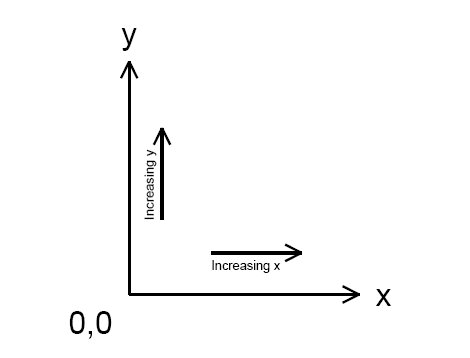

gEDA/gaf File Format Document
Overview
This file is the official documentation for the file formats in gEDA/gaf (gschem And Friends). The primary file format used in gEDA/gaf is the schematic/symbol format. Files which end with .sch or .sym are schematics or symbol files. Until there is another file type in gEDA/gaf, then this document will only cover the symbol/schematic file format.
This file format document is current as of gEDA/gaf version 20040111. This document covers file format version 1.
Note, this file format and any other file formats associated with gEDA are placed under the General Public License (GPL) version 2.0. The gEDA/gaf symbol and schematic file format is Copyright (C) 1998-2004 Ales Hvezda.
Coordinate Space
All coordinates are in mils (1/1000 or an inch). This is an arbitrary decision. Remember in there is no concept of physical lengths/dimensions in schematics and symbols (for schematic capture only).
- Origin is in lower left hand corner.
- The size of the coordinate space is unlimited, but it is recommended that all objects stay within (120.0, 90.0) (x, y inches).
- It is generally advisable to have positive x and y coordinates, however, negative coordinates work too, but not recommended.
The following figure shows how the coordinate space is setup:
|  |
X axis increases going to the right. Y axis increase going up. Coordinate system is landscape and corresponds to a sheet of paper turned on its side.
Filenames
Symbols end in .sym. The only symbol filename convention that is used in gEDA/gaf is that if there are multiple instances of a symbol with the same name (like a 7400), then a -1, -2, -3, … -N suffix is added to the end of the filename. Example: 7400-1.sym, 7400-2.sym, 7400-3.sym…
Schematics end in .sch. There used to be a schematic filename convention (adding a -1 .. -N to the end of the basename), but this convention is now obsolete. Schematic filenames can be anything that makes sense to the creator.
Object types
A schematic/symbol file for gEDA/gaf consists of:
- A version (v) as the first item in the file. This is required.
- Any number of objects and the correct data. Objects are specified by an “object type”
- Most objects are a single line, however text objects are two lines long.
- No blank lines at the end of the file (these are ignored by the tools)
- For all enumerated types in the gEDA/gaf file formats, the field takes on the numeric value.
The “object type” id is a single letter and this id must start in the first column. The object type id is case sensitive.
The schematic and symbol files share the same file layout. A symbol is nothing more than a collection of primitive objects (lines, boxes, circles, arcs, text, and pins). A schematic is a collection of symbols (components), nets, and buses.
The following sections describe the specifics of each recognized object type. Each section has the name of the object, which file type (sch/sym) the object can appear in, the format of the data, a description of each individual field, details and caveats of the fields, and finally an example with description.
For information on the color index (which is used in practically all objects), see the Color section.
version
Valid in: Schematic and Symbol files
type version
| Field | Type/unit | Description |
|---|---|---|
| type | char | v |
| version | int | version of gEDA/gaf that wrote this file |
| fileformat_version | int | gEDA/gaf file format version number |
- The type is a lower case “v” (as in Victor).
- This object must be in every file used or created by the gEDA/gaf tools.
- The format of the first version field is YYYYMMDD.
- The version number is not an arbitrary timestamp. Do not make up a version number and expect the tools to behave properly.
- The “version of gEDA/gaf that wrote this file” was used in all versions of gEDA/gaf up to 20030921 as the file formats version. This field should no longer be used to determine the file format. It is used for information purposes only now.
- Starting at and after gEDA/gaf version 20031004, the fileformat version field is used to determine the file format version. All file format code should key off of this field.
- fileformat version increases when the file format changes.
- The starting point for fileformat version is 1.
- fileformat version is just an integer with no minor number.
- Valid versions include: 19990601, 19990610, 19990705, 19990829, 19990919, 19991011, 20000220, 20000704, 20001006, 20001217, 20010304, 20010708, 20010722, 20020209, 20020414, 20020527, 20020825, 20021103, 20030223, 20030525, 20030901, 20040111, 20040710, 20041228, 20050313, 20050820, 20060123, 20060824, 20060906, 20061020, 20070216, 20070526, 20070626
- CVS or test versions (should not be used): 20030921, 20031004, 20031019, 20031231, 20050814
- Keep in mind that each of the above listed versions might have had file format variations. This document only covers the last version’s file format.
Example:
v 20040111 1
line
Valid in: Schematic and Symbol files
type x1 y1 x2 y2 color width capstyle dashstyle dashlength dashspace
| Field | Type/unit | Description |
|---|---|---|
| type | char | L |
| x1 | int/mils | First X coordinate |
| y1 | int/mils | First Y coordinate |
| x2 | int/mils | Second X coordinate |
| y2 | int/mils | Second Y coordinate |
| color | int | Color index |
| width | int/mils | Width of line |
| capstyle | int | Line cap style |
| dashstyle | int | Type of dash style |
| dashlength | int | Length of dash |
| dashspace | int | Space inbetween dashes |
- The capstyle is an enumerated type:
- END NONE = 0
- END SQUARE = 1
- END ROUND = 2
- The dashstyle is an enumerated type:
- TYPE SOLID = 0
- TYPE DOTTED = 1
- TYPE DASHED = 2
- TYPE CENTER = 3
- TYPE PHANTOM = 4
- The dashlength parameter is not used for TYPE SOLID and TYPE DOTTED. This parameter should take on a value of -1 in these cases.
- The dashspace paramater is not used for TYPE SOLID. This parameter should take on a value of -1 in these case.
Example:
L 23000 69000 28000 69000 3 40 0 1 -1 75
A line segment from (23000, 69000) to (28000, 69000) with color index 3, 40 mils thick, no cap, dotted line style, and with a spacing of 75 mils in between each dot.
picture
Valid in: Schematic and Symbol files
type x1 y1 width height angle ratio mirrored embedded
filename
[encoded picture data
encoded picture end]
| Field | Type/unit | Description |
|---|---|---|
| type | char | G |
| x | int/mils | Lower left X coordinate |
| y | int/mils | Lower left Y coordinate |
| width | int/mils | Width of the picture |
| height | int/mils | Height of the picture |
| angle | int/degrees | Angle of the picture |
| mirrored | char | Mirrored or normal picture |
| embedded | char | Embedded or link to the picture file |
| filename | string | path and filename of a not embedded picture |
| encoded picture data | string | Serialized picture encoded using base64 |
| encoded picture end | string | A line containing only a dot character |
- This object is a picture object. The first line contains all the picture parameters, and the second line is the path and filename of the picture. The filename is not used if the picture is embedded.
- The angle of the picture can only take on one of the following values: 0, 90, 180, 270.
- The mirrored field is an enumerated type:
- NOT MIRRORED = 0
- MIRRORED = 1
- The embedded field is an enumerated type:
- NOT EMBEDDED = 0
- EMBEDDED = 1 (not yet supported)
- The encoded picture and encoded picture end fields are only in the file if the picture is embedded in the schematic:
- encoded picture data: This is a multiple line field. The picture is serialized and then encoded using base64. This way the encoded data uses only printable characters. This field is the result of these two operations.
- encoded picture end : A line containing only a single dot '.' character marks the end of the encoded picture data.
Example:
G 16900 35800 1400 2175 0 6.435331e-01 0 0 ../bitmaps/logo.jpg
A picture object with the lower left corner at (16900, 35800). The width of the image is 1400 mils, and its height is 2175 mils (i.e.: the ratio is 0.6353). The picture rotation is 0 degrees and the picture is not mirrored, neither embedded.
The picture path and filename is showed in the second line.
Example:
G 16900 35800 1400 2175 0 6.435331e-01 0 1 ../bitmaps/logo.jpg AAAAAAAAAAAAAAAAAAAAAAAAAAAAAAAAAAAAAAAAAAAAAAAAAAAAA BBBBBBBBBBBBBBBBBBBBBBBBBBBBBBBBBBBBBBBBBBBBBBBBBBBBB .
A picture object with the lower left corner at (16900, 35800). The width of the image is 1400 mils, and its height is 2175 mils (i.e.: the ratio is 0.6353).
The picture rotation is 0 degrees, it is not mirrored, and it is embedded.
The picture path and filename is showed in the second line. Since this is an embedded picture, the filename and path are not used.
The encoded picture data is only an example (it is not real data). The last line containing a single dot '.' character marks the end of the encoded picture data.
box
Valid in: Schematic and Symbol files
type x y width height color width capstyle dashtype dashlength dashspace
filltype fillwidth angle1 pitch1 angle2 pitch2
| Field | Type/unit | Description |
|---|---|---|
| type | char | B |
| x | int/mils | Lower left hand X coordinate |
| y | int/mils | Lower left hand Y coordinate |
| width | int/mils | Width of the box (x direction) |
| height | int/mils | Height of the box (y direction) |
| color | int | Color index |
| width | int/mils | Width of lines |
| capstyle | int/mils | Line cap style |
| dashstyle | int | Type of dash style |
| dashlength | int/mils | Length of dash |
| dashspace | int/mils | Space inbetween dashes |
| filltype | int | Type of fill |
| fillwidth | int/mils | Width of the fill lines |
| angle1 | int/degrees | First angle of fill |
| pitch1 | int/mils | First pitch/spacing of fill |
| angle2 | int/degrees | Second angle of fill |
| pitch2 | int/mils | Second pitch/spacing of fill |
- The capstyle is an enumerated type:
- END NONE = 0
- END SQUARE = 1
- END ROUND = 2
- The dashstyle is an enumerated type:
- TYPE SOLID = 0
- TYPE DOTTED = 1
- TYPE DASHED = 2
- TYPE CENTER = 3
- TYPE PHANTOM = 4
- The dashlength parameter is not used for TYPE SOLID and TYPE DOTTED. This parameter should take on a value of -1 in these cases.
- The dashspace paramater is not used for TYPE SOLID. This parameter should take on a value of -1 in these case.
- The filltype parameter is an enumerated type:
- FILLING HOLLOW = 0
- FILLING FILL = 1
- FILLING MESH = 2
- FILLING HATCH = 3
- FILLING VOID = 4 unused
- If the filltype is 0 (FILLING HOLLOW), then all the fill parameters should take on a value of -1.
- The fill type FILLING FILL is a solid color fill.
- The two pairs of pitch and spacing control the fill or hatch if the fill type is FILLING MESH.
- Only the first pair of pitch and spacing are used if the fill type is FILLING HATCH.
Example:
B 33000 67300 2000 2000 3 60 0 2 75 50 0 -1 -1 -1 -1 -1
A box with the lower left hand corner at (33000, 67300) and a width and height of (2000, 2000), color index 3, line width of 60 mils, no cap, dashed line type, dash length of 75 mils, dash spacing of 50 mils, no fill, rest parameters unset.
circle
Valid in: Schematic and Symbol files
type x y radius color width capstyle dashtype dashlength dashspace
filltype fillwidth angle1 pitch1 angle2 pitch2
| Field | Type/unit | Description |
|---|---|---|
| type | char | V |
| x | int/mils | Center X coordinate |
| y | int/mils | Center Y coordinate |
| radius | int/mils | Radius of the circle |
| color | int | Color index |
| width | int/mils | Width of circle line |
| capstyle | int/mils | 0 unused |
| dashstyle | int | Type of dash style |
| dashlength | int/mils | Length of dash |
| dashspace | int/mils | Space inbetween dashes |
| filltype | int | Type of fill |
| fillwidth | int/mils | Width of the fill lines |
| angle1 | int/degrees | First angle of fill |
| pitch1 | int/mils | First pitch/spacing of fill |
| angle2 | int/degrees | Second angle of fill |
| pitch2 | int/mils | Second pitch/spacing of fill |
- The dashstyle is an enumerated type:
- TYPE SOLID = 0
- TYPE DOTTED = 1
- TYPE DASHED = 2
- TYPE CENTER = 3
- TYPE PHANTOM = 4
- The dashlength parameter is not used for TYPE SOLID and TYPE DOTTED. This parameter should take on a value of -1 in these cases.
- The dashspace paramater is not used for TYPE SOLID. This parameter should take on a value of -1 in these case.
- The filltype parameter is an enumerated type:
- FILLING HOLLOW = 0
- FILLING FILL = 1
- FILLING MESH = 2
- FILLING HATCH = 3
- FILLING VOID = 4 unused
- If the filltype is 0 (FILLING HOLLOW), then all the fill parameters should take on a value of -1.
- The fill type FILLING FILL is a solid color fill.
- The two pairs of pitch and spacing control the fill or hatch if the fill type is FILLING MESH.
- Only the first pair of pitch and spacing are used if the fill type is FILLING HATCH.
Example:
V 38000 67000 900 3 0 0 2 75 50 2 10 20 30 90 50
A circle with the center at (38000, 67000) and a radius of 900 mils, color index 3, line width of 0 mils (smallest size), no cap, dashed line type, dash length of 75 mils, dash spacing of 50 mils, mesh fill, 10 mils thick mesh lines, first mesh line: 20 degrees, with a spacing of 30 mils, second mesh line: 90 degrees, with a spacing of 50 mils.
arc
Valid in: Schematic and Symbol files
type x y radius startangle sweepangle color width capstyle dashtype
dashlength dashspace
| Field | Type/unit | Description |
|---|---|---|
| type | char | A |
| x | int/mils | Center X coordinate |
| y | int/mils | Center Y coordinate |
| radius | int/mils | Radius of the arc |
| startangle | int/degrees | Starting angle of the arc |
| sweepangle | int/degrees | Amount the arc sweeps |
| color | int | Color index |
| width | int/mils | Width of circle line |
| capstyle | int | Cap style |
| dashstyle | int | Type of dash style |
| dashlength | int/mils | Length of dash |
| dashspace | int/mils | Space inbetween dashes |
- The startangle can be negative, but not recommended.
- The sweepangle can be negative, but not recommended.
- The capstyle is an enumerated type:
- END NONE = 0
- END SQUARE = 1
- END ROUND = 2
- The dashstyle is an enumerated type:
- TYPE SOLID = 0
- TYPE DOTTED = 1
- TYPE DASHED = 2
- TYPE CENTER = 3
- TYPE PHANTOM = 4
- The dashlength parameter is not used for TYPE SOLID and TYPE DOTTED. This parameter should take on a value of -1 in these cases.
- The dashspace paramater is not used for TYPE SOLID. This parameter should take on a value of -1 in these case.
Example:
A 30600 75000 2000 0 45 3 0 0 3 75 50
An arc with the center at (30600, 75000) and a radius of 2000 mils, a starting angle of 0, sweeping 45 degrees, color index 3, line width of 0 mils (smallest size), no cap, center line type, dash length of 75 mils, dash spacing of 50 mils.
text
Valid in: Schematic and Symbol files
type x y color size visibility show_name_value angle alignment num_lines
string line 1
string line 2
string line 3
…
string line N
| Field | Type/unit | Description |
|---|---|---|
| type | char | T |
| x | int/mils | First X coordinate |
| y | int/mils | First Y coordinate |
| color | int | Color index |
| size | int/points | Size of text |
| visibility | int | Visibility of text |
| show_name_value | int | Attribute visibility control |
| angle | int/degrees | Angle of the text |
| alignment | int | Alignment/origin of the text |
| num_lines | int | Number of lines of text (1 based) |
| string line 1 … N | string | The text strings, on a seperate line |
- This object is a multi line object. The first line contains all the text parameters and the subsequent lines are the text strings.
- There must be exactly num lines of text following the T … string.
- The maximum length of any single text string is 1024, however there is no limit to the number of text string lines.
- The minimum size is 2 points (1/72 of an inch).
- There is no maximum size.
- The coordinate pair is the origin of the text item.
- The visibility field is an enumerated type:
- INVISIBLE = 0
- VISIBLE = 1
- The show_name_value is an enumerated type:
- SHOW NAME VALUE = 0 (show both name and value of an attribute)
- SHOW VALUE = 1 (show only the value of an attribute)
- SHOW NAME = 2 (show only the name of an attribute)
- The show_name_value field is only valid if the string is an attribute (string has to be in the form: name=value to be considered an attribute).
- The angle of the text can only take on one of the following values: 0, 90, 180, 270. A value of 270 will always generate upright text.
- The alignment/origin field controls the relative location of the origin.
- The alignment field can take a value from 0 to 8.
- The num_lines field always starts at 1.
- The num_lines field was added starting with file format version 1. Past versions (0 or earlier) only supported single line text objects.
The following diagram shows what the values for the alignment field mean:
 |
Example:
T 16900 35800 3 10 1 0 0 0 1 Text string!
A text object with the origin at (16900, 35800), color index 3, 10 points in size, visible, attribute ags not valid (not an attribute), origin at lower left, string: Text string!
Example:
T 16900 35800 3 10 1 0 0 0 5 Text string line 1 Text string line 2 Text string line 3 Text string line 4 Text string line 5
This is a similar text object as the above example, however here there are five lines of text.
net
Valid in: Schematic files ONLY
type x1 y1 x2 y2 color
| Field | Type/unit | Description |
|---|---|---|
| type | char | N |
| x1 | int/mils | First X coordinate |
| y1 | int/mils | First Y coordinate |
| x2 | int/mils | Second X coordinate |
| y2 | int/mils | Second Y coordinate |
| color | int | Color index |
- Nets can only appear in schematic files.
- You cannot have a zero length net (the tools will throw them away).
Example:
N 12700 29400 32900 29400 4
A net segment from (12700, 29400) to (32900, 29400) with color index 4.
bus
Valid in: Schematic files ONLY
type x1 y1 x2 y2 color ripperdir
| Field | Type/unit | Description |
|---|---|---|
| type | char | U |
| x1 | int/mils | First X coordinate |
| y1 | int/mils | First Y coordinate |
| x2 | int/mils | Second X coordinate |
| y2 | int/mils | Second Y coordinate |
| color | int | Color index |
| ripperdir | int | Direction of bus rippers |
- The ripperdir field for an brand new bus is 0.
- The ripperdir field takes on a value of 1 or -1 when a net is connected to the bus for the first time. This value indicates the direction of the ripper symbol. The ripper direction is set to the same value for the entire life of the bus object.
- Buses can only appear in schematic files.
- You cannot have a zero length bus (the tools will throw them away).
Example:
U 27300 37400 27300 35300 3 0
A bus segment from (27300, 37400) to (27300, 35300) with color index 3 and no nets have been connected to this bus segment.
pin
Valid in: Symbol files ONLY
type x1 y1 x2 y2 color pintype whichend
| Field | Type/unit | Description |
|---|---|---|
| type | char | P |
| x1 | int/mils | First X coordinate |
| y1 | int/mils | First Y coordinate |
| x2 | int/mils | Second X coordinate |
| y2 | int/mils | Second Y coordinate |
| color | int | Color index |
| pintype | int | Type of pin |
| whichend | int | Specifies the active end |
- The pintype is an enumerated type:
- NORMAL PIN = 0
- BUS PIN = 1 unused
- The whichend specifies which end point of the pin is the active connection port. Only this end point can have other pins or nets connected to it.
- To make the first end point active, whichend should be 0, else to specify the other end, whichend should be 1.
- Pins can only appear in symbol files.
- You cannot have a zero length pen (the tools will throw them away).
Example:
P 0 200 200 200 1 0 0
A pin from (0, 200) to (200, 200) with color index 1, a regular pin, and the first point being the active connection end.
component
Valid in: Schematic files ONLY
type x y selectable angle mirror basename
| Field | Type/unit | Description |
|---|---|---|
| type | char | C |
| x | int/mils | Origin X coordinate |
| y | int/mils | Origin Y coordinate |
| selectable | int | Selectable flag |
| angle | int/degrees | Angle of the component |
| mirror | int | Mirror around Y axis |
| basename | string | The filename of the component |
The selectable field is either 1 for selectable or 0 if not selectable.
- The angle field can only take on the following values: 0, 90, 180, 270.
- The angle field can only be positive.
- The mirror flag is 0 if the component is not mirrored (around the Y axis).
- The mirror flag is 1 if the component is mirrored (around the Y axis).
- The just basename is the filename of the component. This filename is not the full path.
Example:
C 18600 19900 1 0 0 7400-1.sym
A component who’s origin is at (18600,19900), is selectable, not rotated, not mirrored, and the basename of the component is 7400-1.sym.
font
Valid in: Special font files ONLY
type character width flag
| Field | Type/unit | Description |
|---|---|---|
| type | char | F |
| character | char | The character being defined |
| width | int/mils | Width of the character (mils) |
| flag | int | Special space flag |
- This is a special tag and should ONLY show up in font definition files.
- If the font character being defined is the space character (32) then flag should be 1, otherwise 0.
Example:
F 11 1
The above font definition is for the space character.
Colors
In the gEDA/gaf schematic and symbol file format colors are specified via an integer index. The relationship between integer and color is based on object type. Each object type typically has one or more colors. Here is a table of color index to object type:
| Index | Object type |
|---|---|
| 0 | BACKGROUND_COLOR |
| 1 | PIN_COLOR |
| 2 | NET_ENDPOINT_COLOR |
| 3 | GRAPHIC_COLOR |
| 4 | NET_COLOR |
| 5 | ATTRIBUTE_COLOR |
| 6 | LOGIC_BUBBLE_COLOR |
| 7 | GRID_COLOR |
| 8 | DETACHED_ATTRIBUTE_COLOR |
| 9 | TEXT_COLOR |
| 10 | BUS_COLOR |
| 11 | SELECT_COLOR |
| 12 | BOUNDINGBOX_COLOR |
| 13 | ZOOM_BOX_COLOR |
| 14 | STROKE_COLOR |
| 15 | LOCK_COLOR |
| 16 | OUTPUT_BACKGROUND_COLOR |
The actual color associated with the color index is defined on a per tool bases. Objects are typically assigned their corresponding color index, but it is permissible (sometimes) to assign other color index values to different object types.
Attributes
Attributes are enclosed in braces {} and can only be text. Attributes are text items which take on the form name=value. If it doesn’t have name=value, it’s not an attribute. Attributes are attached to the previous object. Here’s an example:
P 988 500 1300 500 1
{
T 1000 570 5 8 1 1 0
pinseq=3
T 1000 550 5 8 1 1 0
pinnumber=3
}
The object is a pin which has an attribute pinnumber=3 and pinseq=3 (name=value). You can have multiple text objects (both the T … and text string are required) in between the braces {}. As of 20021103, you can only attached text items as attributes. Attaching other object types as attributes is unsupported.
You can also have “toplevel” attributes. These attributes are not attached to any object, but instead are just text objects that take on the form name=value.
These attributes are useful when you need to convey some info about a schematic page or symbol and need the netlister to have access to this info.
Embedded Components
Embedded components are components which have all of their definition stored within the schematic file. When a users place a component onto a schematic page, they have the option of making the component embedded. Other than storing all the symbol information inside of the schematic, an embedded component is just any other component. Embedded components are defined as:
C 18600 21500 1 0 0 EMBEDDED555-1.sym [ ... ... Embedded primitive objects ... ]
In the example above, 555-1.sym is the component. The EMBEDDED tag and the [ ] are the distinguishing characteristics of embedded components. componentname.sym must exist in one of the specified component-libraries if you want to unembed the component.
Document Revision History
| November 30th, 2002 | Created fleformats.tex from fleformats.html. |
| December 1st, 2002 | Continued work on this document. |
| October 4th, 2003 | Added new file format version flag info. |
| October 19th, 2003 | Added num lines text field. |